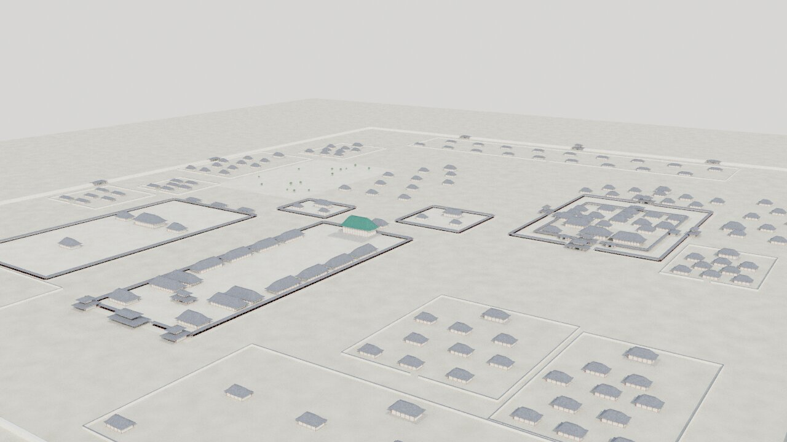
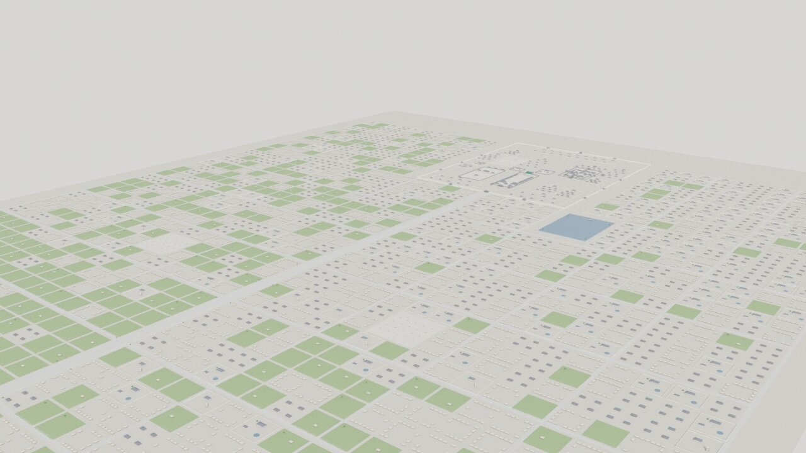
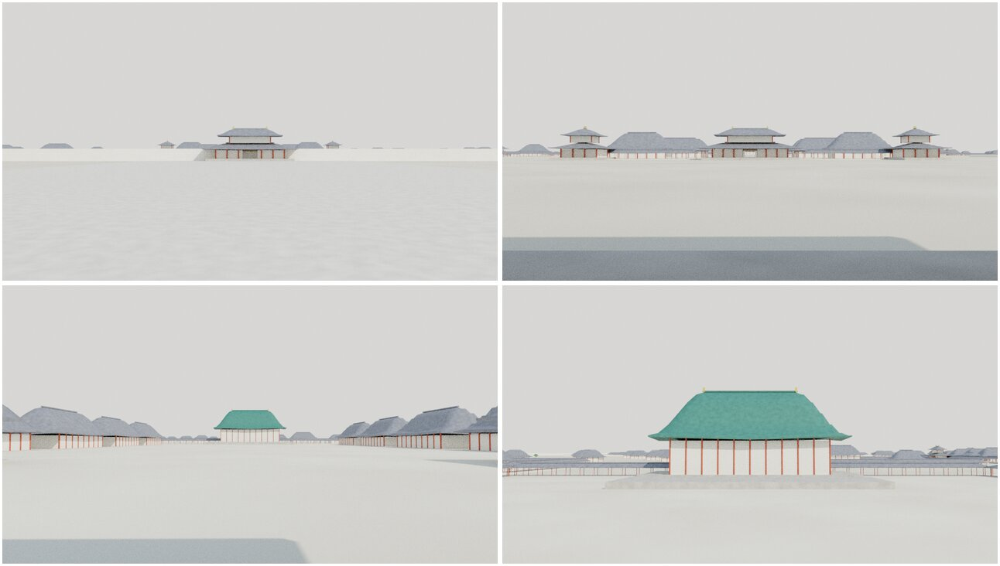

2. スクリプトを実行して平安京を生成する
画面を出さない「バックグラウンド実行」で、配置CSVから大内裏 → 市街 → 動画用カメラの順にモデルを作ります。コマンドはすべてリポジトリの直下（yyBlenderHeian）で実行します。
全体の流れ
| ステップ | スクリプト | 入力 | 出力（output/） | 実測時間 |
|---|---|---|---|---|
| 1. 大内裏 | build_chodoin_detailed.py | 配置CSV v3.1＋推定CSV | heian_daidairi_detail_v7.blend、確認画像2枚 | 約31分 |
| 2. 市街 | build_city_layer.py | v7 | heian_daidairi_detail_v8.blend、確認画像3枚 | 約1分 |
| 3. 動画カメラ | setup_axis_animation.py | v7 | heian_daidairi_axis_anim.blend、試し描き4枚 | 約20秒 |
| 4. 動画の連番 | render_axis_anim.ps1 | 動画用 .blend | axis_anim/frame_0001〜0288.png | 約18分 |
時間は Windows 11・16スレッドCPU・RTX 3060 で実測した値です。ステップ1はオブジェクトを1つずつ作る処理（CPU・ほぼ単一スレッド）が大半で、GPU では速くなりません。ステップ1の最後の確認画像と、ステップ2〜4のレンダリングは GPU で描きます。
GPU について：スクリプトは scripts/heian_gpu.py で GPU を自動で探し、OptiX → CUDA → HIP → oneAPI → Metal の順に使えるものを選びます。見つからなければ CPU で描きます。ログに RENDER_DEVICE OPTIX ['NVIDIA GeForce RTX 3060'] のように表示されます。CPU に固定したいときは $env:HEIAN_DEVICE = "CPU" を設定してください。
準備
PowerShell を開き、リポジトリ直下に移動して、1章のエイリアスを設定しておきます。
cd D:\workspace\yyBlenderHeian
Set-Alias blender "C:\Program Files\Blender Foundation\Blender 5.0\blender.exe"ステップ1：大内裏モデル（v7）を作る
blender --background --python scripts/build_chodoin_detailed.py -- `
data/daidairi_layout_v3_1.csv `
output/heian_daidairi_detail_v7.blend `
output/view_v7 `
data/daidairi_conjectural_v1.csv-- より後ろがスクリプトへの引数です。
| 引数 | 意味 |
|---|---|
| 1つめ | 配置CSV（採用版 v3.1） |
| 2つめ | 保存する .blend |
| 3つめ | 確認画像の接頭辞。_top.png（真上）と _hero.png（南東上空）が付く |
| 4つめ（省略可） | 推定レイヤーCSV。省略すると根拠のある施設だけの v6 相当になる |
終わると最後に次のように表示されます。
CONJECTURAL_DONE rows=22 objects=417
Info: Saved as "heian_daidairi_detail_v7.blend"
DETAIL_DONE detail=61 context=21 objects=5659
output/view_v7_hero.png。中央やや左の緑の屋根が大極殿、その南に朝堂院の12堂が並ぶ。ステップ2：市街レイヤー（v8）を足す
v7 を開いた状態でスクリプトを実行します（.blend を --python より前に書きます）。
blender --background output/heian_daidairi_detail_v7.blend --python scripts/build_city_layer.pyCITY_DONE plots=1088 kinds={2: 301, 1: 239, 4: 385, 0: 142, 3: 21} objects=19891
SAVED_V8乱数の種が固定（818）なので、何度実行しても同じ町並み（1,088町・19,891オブジェクト）になります。

output/view_v8_hero.png。緑の区画は畑・空地、青い四角は神泉苑。右京（左側）ほど畑が多い。ステップ3：軸線動画のカメラを設定する
blender --background output/heian_daidairi_detail_v7.blend --python scripts/setup_axis_animation.py朱雀大路 → 朱雀門 → 応天門 → 会昌門 → 朝堂院 → 大極殿と進むカメラ（12秒・288フレーム・24fps）を付けて output/heian_daidairi_axis_anim.blend に保存し、1・96・216・288 フレーム目を試し描きします。
ANIM_SAVED
TEST_FRAME 1 sec=4.8
TEST_FRAME 96 sec=3.3
TEST_FRAME 216 sec=3.1
TEST_FRAME 288 sec=3.1
SETUP_DONE市街まで入れた動画にしたいときは、v7 の代わりに v8 を開いて同じコマンドを実行します。オブジェクトが約4倍になるので、レンダリング時間も長くなります。
ステップ4：動画の全フレームを描く
powershell -ExecutionPolicy Bypass -File scripts/render_axis_anim.ps124フレームずつ区切って描き、描き終わった区切りは次回飛ばします。途中で止めても、もう一度実行すれば続きから再開できます。Git Bash や Linux / macOS では bash scripts/render_axis_anim.sh が同じ動きをします。
RENDER chunk 97-120 22:28:20
RENDER chunk 121-144 22:29:49
...
RENDER chunk 265-288 22:39:15
ALL_CHUNKS_DONE 288 frames
連番 PNG を mp4 にする
方法は2つあります。
- Blender の GUI で：ビデオシーケンサーに連番を読み込んで mp4 に書き出す（4章）。追加のソフトは不要です。
- FFmpeg で：
ffmpeg -framerate 24 -i output/axis_anim/frame_%04d.png -c:v libx264 -pix_fmt yuv420p -crf 18 output/heian_axis_12s.mp4
別の視点の静止画を追加で描く
保存済みの .blend から、軸線（朱雀門→大極殿）を南東上空から見た斜め図と、朝堂院の内側から大極殿を見た図の2枚を描きます（GPU で約12秒）。
blender --background output/heian_daidairi_detail_v7.blend --python scripts/render_views.py -- output/extra視点は render_views.py の views リストで変えられます（5章）。
出力先を変える
ステップ2〜4の出力先は既定で <リポジトリ>/output です。環境変数 HEIAN_WORK で変えられます。ステップ1は引数で渡したパスに出力します。
$env:HEIAN_WORK = "D:\heian_work"うまくいかないとき
| 症状 | 対処 |
|---|---|
blender が見つからない | エイリアスを設定し直す（PowerShell を開き直すと消えます）。または & "C:\Program Files\Blender Foundation\Blender 5.0\blender.exe" とフルパスで呼ぶ |
| ステップ1が終わらないように見える | 約30分かかります。タスクマネージャーで blender.exe が CPU を使っていれば進んでいます |
UnicodeDecodeError | CSV が UTF-8 で保存されていない。5章の注意を参照 |
画像が C:\output など思わぬ場所にできる | Blender は相対パスを独自の基準で解決します。本リポジトリのスクリプトは絶対パスに直してから保存するよう修正済みです。自作のスクリプトでも os.path.abspath() を通してください |
ログに HIPEW initialization failed | AMD 用ライブラリが無いという通知で、NVIDIA の環境では無視して構いません |
| 描画が遅い | ログの RENDER_DEVICE が CPU になっていないか確認。GPU ドライバを更新する |